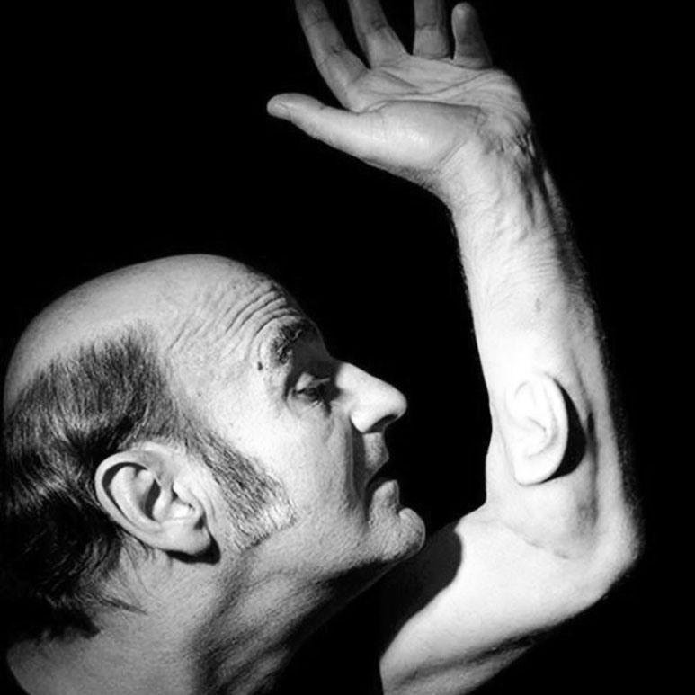

The Process of Creating the Artifact
I initially planned to create the artifact in Java, but I wanted a final product that I could easily share, and a website made the most sense. As I worked on the project, I took screen recordings of the each stage and created a video compilation of all of them, accessible at this link: Video Compilation
Technical Skills Learned or Developed
HTML, CSS styling and transformations, Javascript functions and randomization, Java reading an image
I created the website in HTML, and I styled it using CSS. I used Javascript to assign the values to the 1's and 0's when each text message is clicked. The Javascript randomly assigns the position of each element from an array of possible x and y values.
I generated that array with a Java program that I wrote: The java program goes pixel by pixel through an image and determines if it is black or white and whether to add it the array of values for the black '0's or the array of values for the white '1's. I also write a java program to generate a pattern of positions for the 1's and 0's, which you can see in scenario 2. I combined CSS animation with Javacript in order to make the movement of the 1's and 0's appear animated. If I did not use CSS transformations, the positions changed instantaneously, which is not the effect I wanted.
Texting Research
UCLA Professor Albert Mehrabian found that body language makes up 58% of communication, and vocal tone, pitch, and emphases encapsualtes another 35%. That leaves a mere 7% for the actual content of the message. Texting removes all of the vocal intonation and expressiveness that is read during face to face interactions, leaving only the verbatim content of the message.
According to the Pew Research Center, "72% of teenagers text regularly, and one in three sends more than 100 texts per day." Texting is a preferred method of communication, especially among millennials, so our generation consistently turns to a mode of communication that only allows for 7% of our expressive potential. Are we harming ourselves by doing this, or are we as humans evolving how we communicate?
Media Research
Marshall McLuhan: Technology as Extensions of the Human Body
Extension: occurs when society makes something in a way that extends the range of the human body and mind in a fashion that is new
ex. Shovel for digging extends hands, Microscope extends the eye
Amputations: what skill is lost as a result of this new technology
ex. Telephone extends the voice but amputates the art of penmanship gained through letters, new gun technology made archery skills obsolete
In order to embrace McLuhan's idea, I needed to consider this question: What is the purpose of an object? Or, what is the purpose of a media? (The purpose of an automobile for example, is to transport humans from one place to another, so it extends the feet, because it is faster than walking and requires less effort ) McLuhan believed mankind has been fascinated and obsessed with these extensions, but we ignore or minimize the amputations, and we this at our own peril (ex. High speed travel is convenient and fast, but we ignore the pollution it causes )
Questions to ask about a medium:
- 1. What does the medium improve or enhance, make possible or accelerate?
- 2. What is pushed aside of made obsolete by the medium?
- 3. What does the medium retrieve that was made obsolete earlier?
- 4. When pushed to its extremes, what does the medium flip into?
In the context of texting…
Texting: It extends the mouth because it is how we communicate ideas. It does not require immediate response like a phone call does, and a text can be re-read in the future, where a phone call would need to be recorded. It also extends our mind because it provides us with a record of communication
Amputations: We cannot communicate vocal tone, non-verbal social cues or emotions the way we can over the phone or in person. We do not know the context from which the other person is communicating to us from. They could be running errands while typing a text, or contemplating exactly what to say in reply as they wait for the bus.
Other Media Sources, or Works Inspired by McLuhan
Summary: A medical doctor implanted a cell-cultivated ear beneath the skin on the artists forearm. There were future plans to attach a mic and Bluetooth capabilities to the arm. This perhaps "amputates" the arm, because the arm has less functionality because there is now an ear attached to it. Surgeons questioned the ethics behind the procedure, because he did not have a clinical need for an ear in his arm.
Summary: Artists are turning to new forms of expression; Russian artist Dmitry Morozov created a device that gathered pullition data and turned it into shapes and colors. Eric Standley uses lasers to cut paper into snowflake designs, and he then cut them out in layers to create a 3D piece of art. Another artist used lasers and smoke to create interactive art that could be seen and experienced. These are only a few examples of people that are drawing on their background in architecture and design to create art that builds on a person's environment and experiences.
"From lasers to computer sensors, technology is being used for more than just practical purposes these days. Artists continue to use devices like 3D printers for creative projects. Would McLuhan argue that in the case of technology and art, the medium is the message?"
Summary: When creating a webpage, information is not presented linearly like in a book or movie. Information is scattered across multiple pages with navigable links and the user choses the beginning, middle, and end of their journey through your site; the medium shapes the user's perception of the message. He challenges web designers to guide clients through the message in away that best takes advantage of the Internet, which is the medium of a webpage. How can you market your information and deliver content in a beatiful unique way that still focuses on the content of your page?